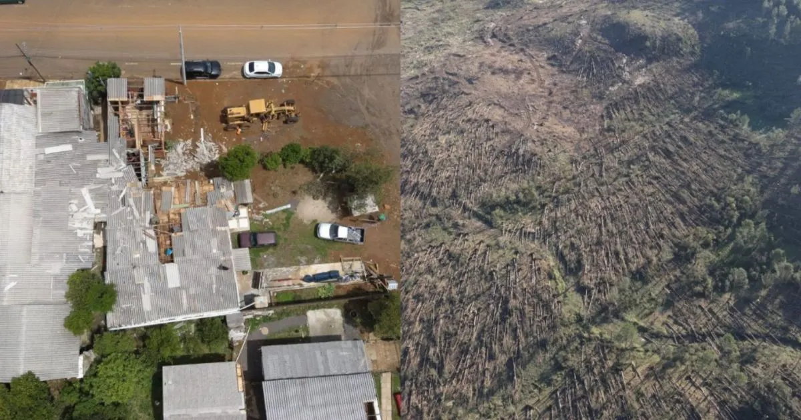

SC em emergênciatrês tornados e duas microexplosões deixam dois mortos
Defesa Civil confirma cinco fenômenos severos entre 1º e 4 de novembro; balanço divulgado na sexta (6) aponta 126 municípios atingidos, e um novo boletim alertou para temporais neste sábado (7).

O que aconteceu
A Defesa Civil de Santa Catarina confirmou, em balanço divulgado na sexta-feira (6 de novembro de 2026), três tornados ocorridos na quarta-feira (4) em Chapecó, Xanxerê e Rio Negrinho. Também identificou duas microexplosões: em Fraiburgo, no domingo (1º), e Timbó Grande, na quarta-feira (4). O levantamento divulgado até a sexta contabilizou 126 municípios com ocorrências, 62 em situação de emergência, 6.423 residências afetadas, 100 pessoas desabrigadas, 557 desalojadas e duas mortes, registradas em Xanxerê e Rio Negrinho. Os números são um retrato do boletim, não uma estimativa de novos eventos neste sábado. O boletim meteorológico nº 311/2026, elaborado às 4h de sábado (7), ainda alertava para risco de temporais fortes e transtornos em diferentes regiões do estado.
Análise do Corvo
Na perspectiva editorial do Raven Crow, a dimensão desses danos exige que a resposta pública seja avaliada pela proteção concreta da vida, da propriedade e da liberdade de quem precisa reconstruir a própria casa. Alertas antecipados, rotas de abrigo, restabelecimento de energia e prestação de contas sobre recursos de emergência têm mais valor que discursos após a tragédia. Há custos de oportunidade em cada real destinado à reconstrução: a urgência justifica prioridades claras, fiscalização e coordenação entre municípios e Estado, sem dispensar transparência. A sucessão de tornados e microexplosões também recomenda distinguir alertas meteorológicos de previsões exatas; risco elevado não significa que cada cidade sofrerá um novo tornado. É preciso acompanhar boletins atualizados e as orientações locais, evitando tanto o alarmismo quanto a minimização do perigo.
Contraponto
Equipes de Defesa Civil, bombeiros e prefeituras precisam agir antes que todos os prejuízos sejam plenamente conhecidos; procedimentos de emergência podem exigir rapidez e recursos extraordinários. A extensão dos danos não comprova, por si só, omissão das autoridades, e é necessário comparar os alertas emitidos, a capacidade de resposta e as condições em cada município antes de atribuir responsabilidades. Os balanços podem ser revistos conforme novos levantamentos.
Fontes
- Defesa Civil de SC — boletim meteorológico nº 311/2026 (07/11, 4h), disponibilizado pela Defesa Civil municipal
- CNN Brasil — Defesa Civil confirma três tornados e duas microexplosões (06/11, 22h41)
- OCP News — balanço de cinco fenômenos, 126 municípios e duas mortes (06/11)
- Record / R7 — temporais em SC e consequências (07/11, 10h56)